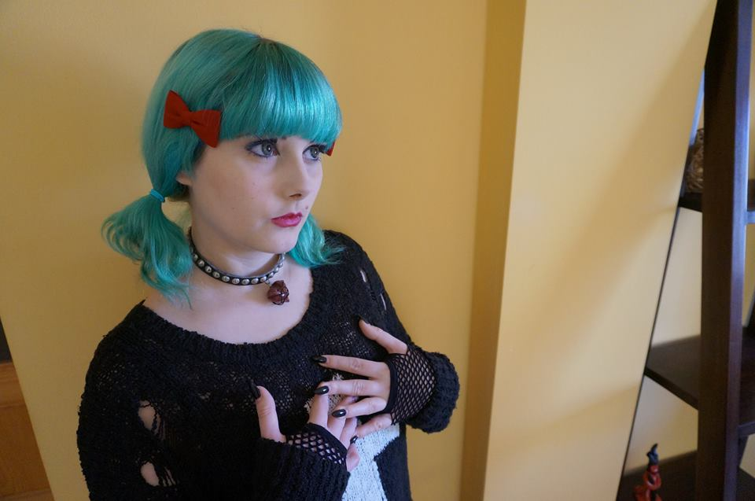
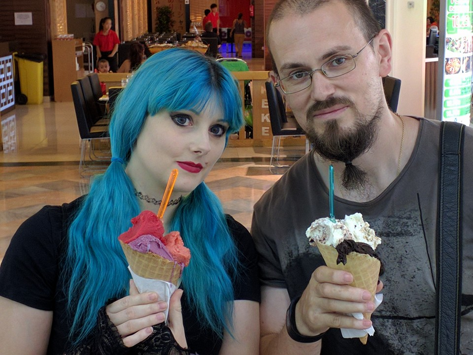
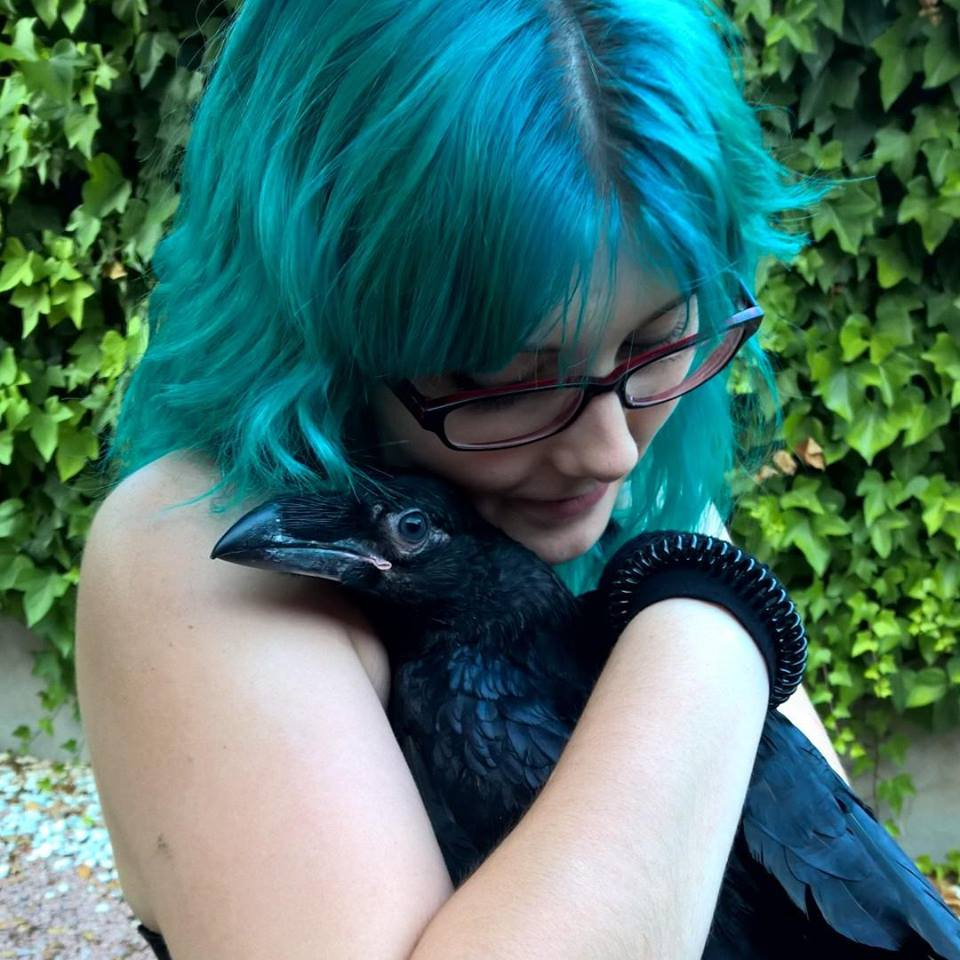
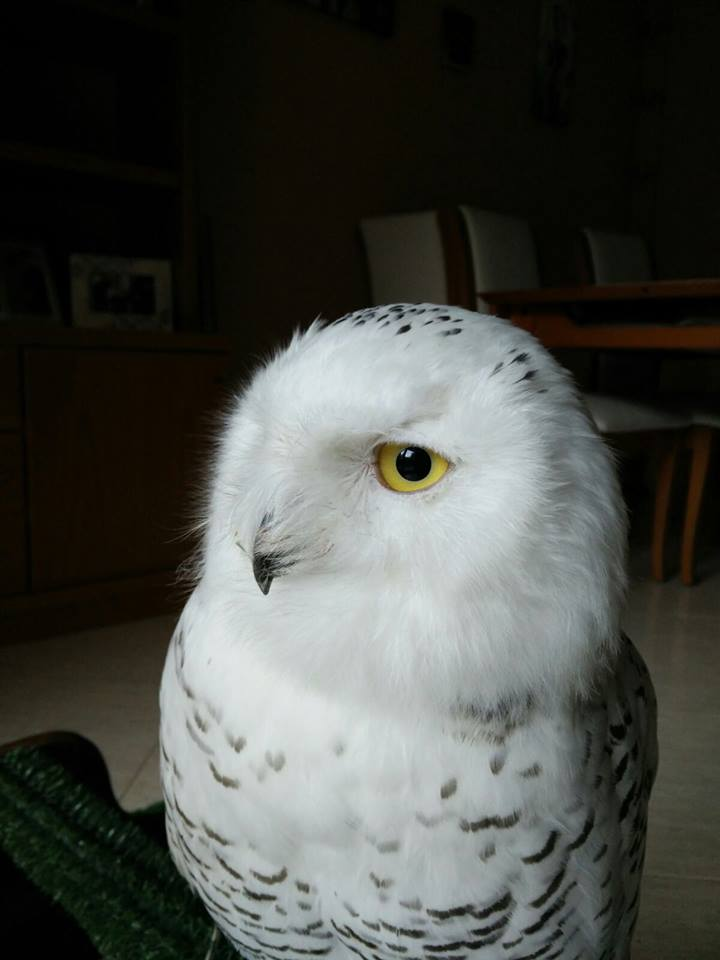
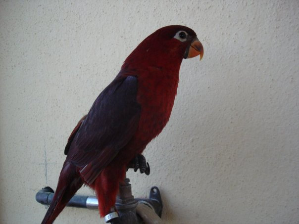
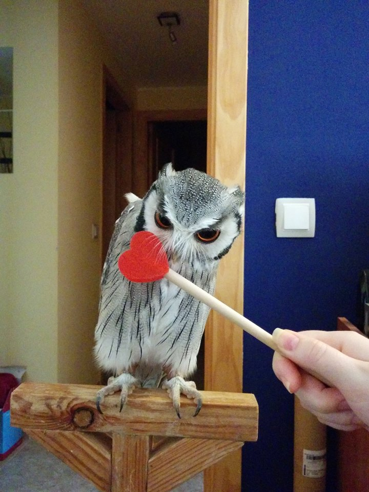
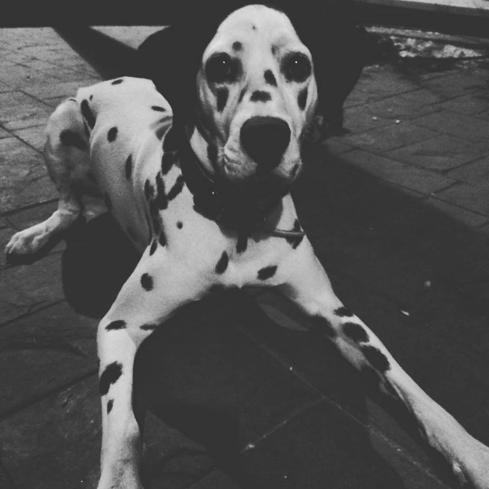

Mi nombre es Aída, nací en Palma de Mallorca y actualmente tengo 32 años.
Viví hasta 2010 en Palma de Mallorca y luego me trasladé a Talamanca de Jarama, en Madrid, donde residí durante casi tres años.
Por motivos personales me vi obligada a volver a Mallorca, aunque no regresé a Palma, sino que estuve en "Sa Torre", una urbanización perteneciente al término municipal de Llucmajor.
En 2015 volvimos a Madrid, esta vez cerca de Alcalá de Henares y estuvimos en una casita de alquiler durante año y medio, hasta que a finales de 2016 terminamos comprando una casa no muy lejos de Arganda del Rey.
| Años | Lugar de residencia |
|---|---|
| 1984 2010 | Palma de Mallorca |
| 2010 2013 | Talamanca de Jarama (Madrid) |
| 2013 2015 | Sa Torre (Mallorca) |
| 2015 2017 | Madrid (en algún lugar próximo a Arganda del Rey) |

Desde muy pequeña comencé a trabajar en el mundo del espectáculo dedicándome a la magia. Trabajé actuando en fiestas particulares (cumpleaños, bodas, comuniones...), en verbenas de pueblos y barrios y en espectáculos profesionales que ofrecían los hoteles como divertimento para sus clientes. También aparecí en diversos programas televisivos, principalmente de carácter local y fuí como asistente y/o participante a congresos de magia que tuvieron lugar tanto en el territorio nacional como alguno internacional.
Volver al índiceMe lo paso muy bien patinando, aunque hace tiempo que no practico y mis viejos patines se me quedaron pequeños hace un tiempo... ¡Debería comprarme unos nuevos! De momento, ya tengo el casco.
Me encanta la lectura, principalmente la literatura fantástica, la ciencia ficción y las historias de terror. En ocasiones también leo algo de novela histórica y aunque suene algo aburrido para muchos, he pasado horas leyendo algunos volúmenes de mi vieja "Enciclopédia de los animales".
No veo demasiado la televisión, pero sigo muchas series y cada vez que puedo hago una escapadita al cine.
Disfruto muchísimo jugando a videojuegos, soy muy fan de la saga "Dragon Age", aunque mi saga favorita siempre será "Silent Hill".
También me encanta escuchar música, principalmente los estilos Gothic Rock, Dark Wave y Synth Pop. Emilie Autumn es una de mis cantantes favoritas, me parece una persona con mucha energía y que sus letras tienen bastante significado. También me gustan grupos como Diary of Dreams, Minuit Machine, Ash Code y She Past Away.
Volver al índiceEn mi vida hay varios "seres" que me acompañan en mi día a día.
El primero de ellos es mi pareja, con quien llevo más de diez años de relación. Su nombre es Jose Luis y compartimos muchas aficiones. Se trata de una persona a la que además de querer, admiro muchísimo por su fuerza (no me refiero a la física, aunque se cuida mucho) y su paciencia, además de que me parece muy inteligente y divertido.
Maeglin es un cuervo común (corvus corax) que llegó a nuestras vidas siendo tan solo un pollito. Ha sido criado en cautividad, al igual que sus padres y siempre ha comido de nuestra mano. Es un animal muy, muy cariñoso aunque a veces sea algo "gamberro" y rompa cosas o te dé un picotazo sin venir a cuento. Le gusta mucho estar en brazos y tiene algunas ocurrencias con las que nos reimos mucho, como por ejemplo esconder su comida. Pero aún hay más, si se da cuenta de que ha sido descubierto mientras guardaba su comida en algún sitio, la saca de ahí y espera a que nadie le mire para esconderla en otro lugar. Los cuervos pueden aprender a hablar, aunque Maeglin aún no lo ha hecho, pero cuando grazna tiene una entonación muy humana.
El siguiente es Dúnim, un búho nival muy jovencito que, al igual que Maeglin, fue criado a mano y en cautividad, como sus padres. Es un animal muy tranquilo hasta que llega la hora de comer, que se desespera y, como me gusta decir a mí, "no da pié con bola".
Simkin es una hembra de lori cardenal, un tipo de loro del tamaño de una cotorra que no come semillas ni el pienso habitual, sino que en libertad comería néctar de flores y en cautividad come un pienso especial que hay que mezclar con agua para formar una papilla que ella pueda digerir. Es el animal más alegre que he visto nunca, le encanta jugar y es muy divertida y excesivamente cariñosa, tanto que si ve que se le hace más caso a otra persona o animal delante de ella, se pone muy celosa y se enfada. Esta es una especie que no suele aprender a hablar, pero Simkin tiene un vocabulario bastante extenso que incluye palabras y frases como "¡Besito!", "¡Qué rico!" o "¿Qué es eso?", aunque los momentos más divertidos son cuando junta varias en una sola frase y termina diciéndole a alguien: "¿Qué pasa? ¡Guapa!".
La pequeña Nymeria es un ejemplar de autillo cariblanco, aunque desde hace unos años la gente lo conoce como búho transformer porque cambia su apariencia dependiendo de los animales que tenga delante, es decir, si su "oponente" es más pequeño que ella, modifica su plumaje y postura para parecer más grande e intimidarlo, sin embargo, si es más grande, ella intentará "desaparecer", haciéndose más pequeña y delgada para confundirse con las ramas del árbol en el que esté posada.
Por último, pero no por ello menos imporante, está Fenris, que es un dálmata de aproximadamente un año de vida. Además de ser un ejemplar realmente bonito, es inménsamente cariñoso, divertidísimo y un poco bruto cuando juega o decide darte un "abrazo". Realmente es un animalito que se nota que nos quiere y se hace querer.
Volver al índice
Este año lo he empezado con fuerza, ya que además de tener una casa propia que hay que decorar y poner a nuestro gusto, he vendido mi vieja furgoneta que usaba para las actuaciones y he comprado un coche de segunda mano con el que de momento estoy practicando, ya que llevaba unos cuatro años sin conducir.
Por otro lado siento como que las cosas empiezan a mejorar y a seguir el camino correcto, por lo que me siento muy feliz e ilusionada.
Para mayor alegría por mi parte, he conseguido entrar en un proyecto ideado por ADALAB y financiado por Fundación Telefónica que consiste en un curso intensivo en el que me están enseñando a programar. Mi vida está dando un giro completo y voy a aprender desarrollo front-end, lo cual me abrirá las puertas a un nuevo mundo de posibilidades. Tengo muchas ganas de seguir aprendiendo y de reinventarme como programadora.
Volver al índice